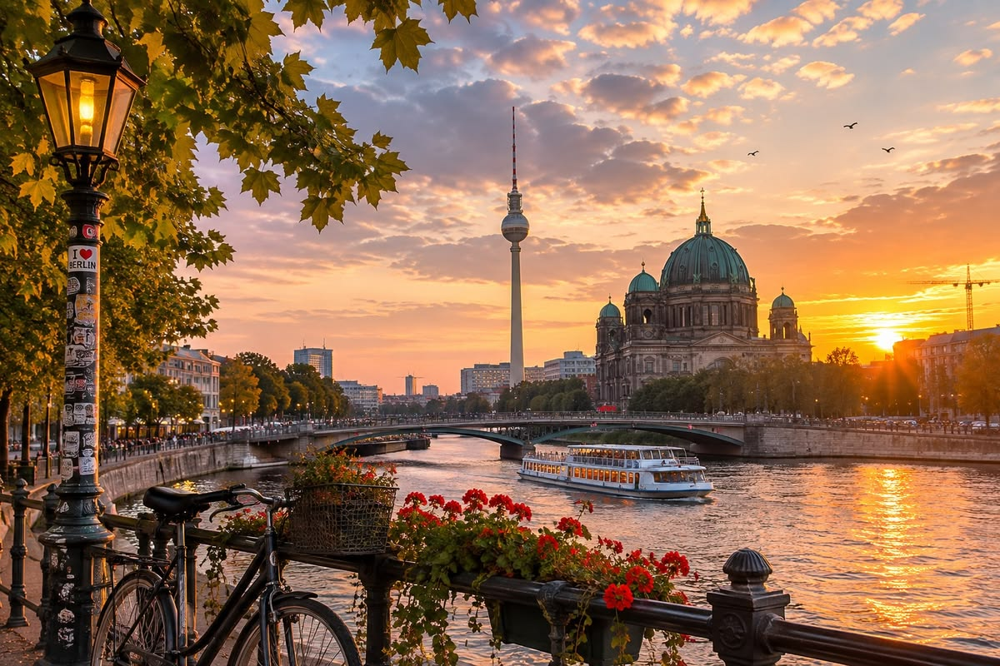
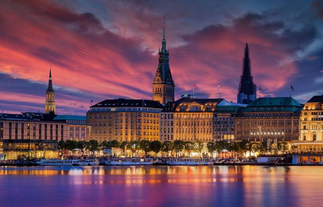
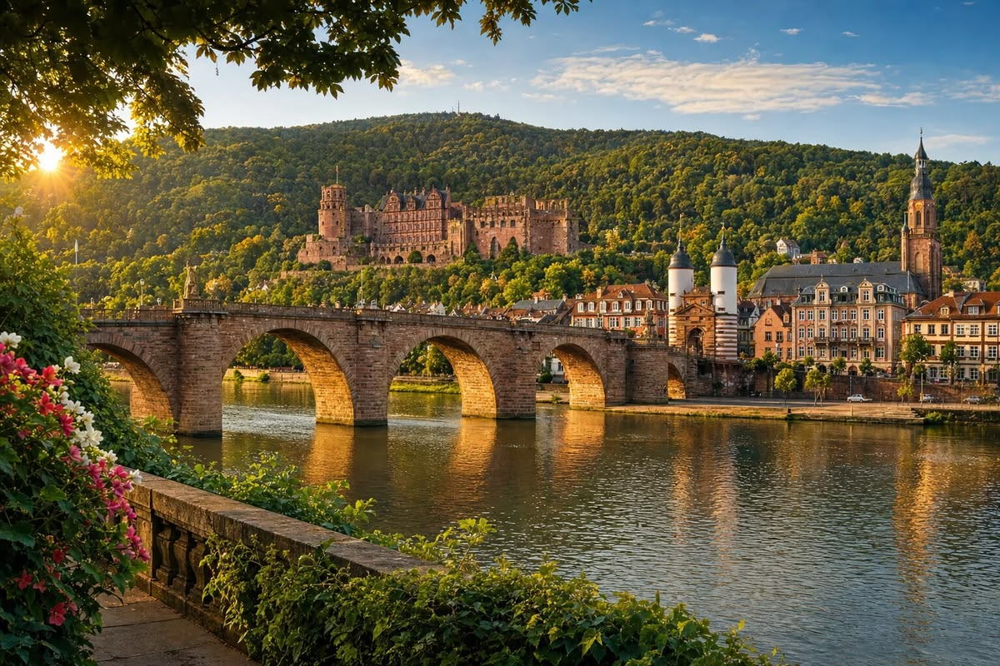
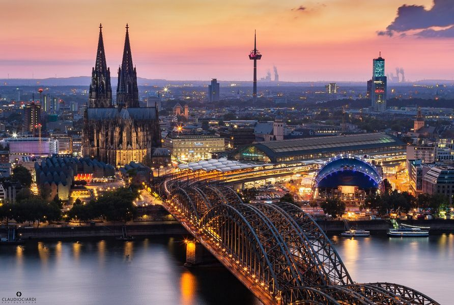

Place a visiter en Allmand
Berlin(La capitale)
Berlin, une ville où l’histoire rencontre la liberté..

Voici les principale activites
- Porte de Brandebourg
- Mémorial du Mur de Berlin et Checkpoint Charlie
- L’Île aux Musées (Museumsinsel)
Pour plus d'info
Munich (La capitale de la Bavière)
À Munich, la tradition bavaroise a le goût de la fête..

Voici les principale activites
- Marienplatz et le Rathaus
- Château de Nymphenburg
- Hofbräuhaus
Pour plus d'info
Hambourg (La cité portuaire)
Hambourg, là où l’Elbe ouvre la ville sur le monde.

Voici les principale activites
- Miniatur Wunderland
- Speicherstadt
- L'Église Saint-Michel (St. Michaelis)
Plus plus d'info
Heidelberg (La ville romantique)
Heidelberg, entre château romantique et douceur du Neckar.

Voici les principale visite
- Le Château de Heidelberg
- Le Chemin des Philosophes (Philosophenweg)
Pour plus d'info
Cologne (Rhénanie-du-Nord-Westphalie)
Cologne, une ville chaleureuse à l’ombre de sa grande cathédrale.

Voici les principale visite
- La Cathédrale de Cologne (Kölner Dom)
- Le Musée du Chocolat (Schokoladenmuseum)
- Croisière sur le Rhin
Pour plus d'info